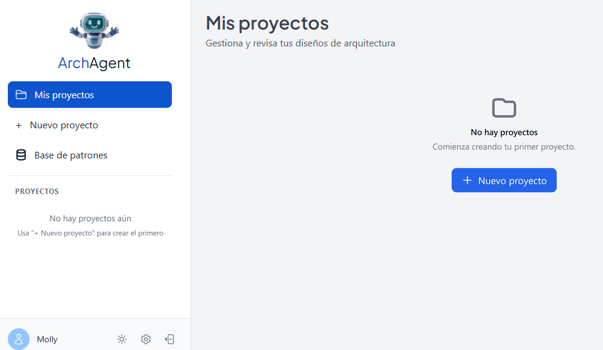
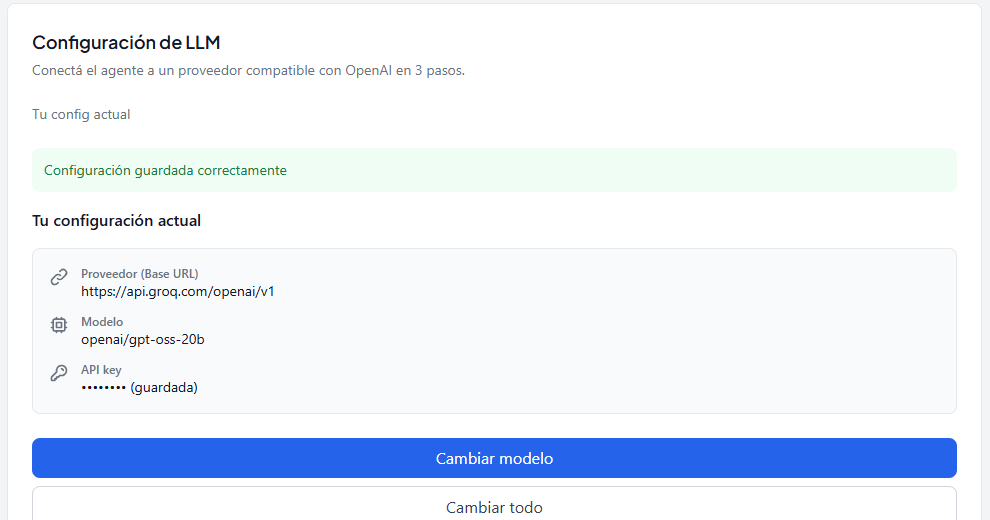
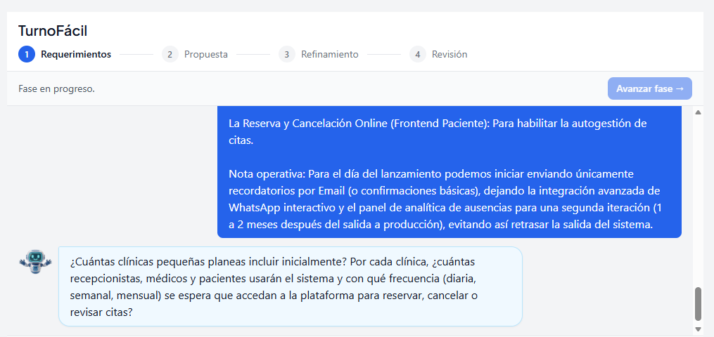
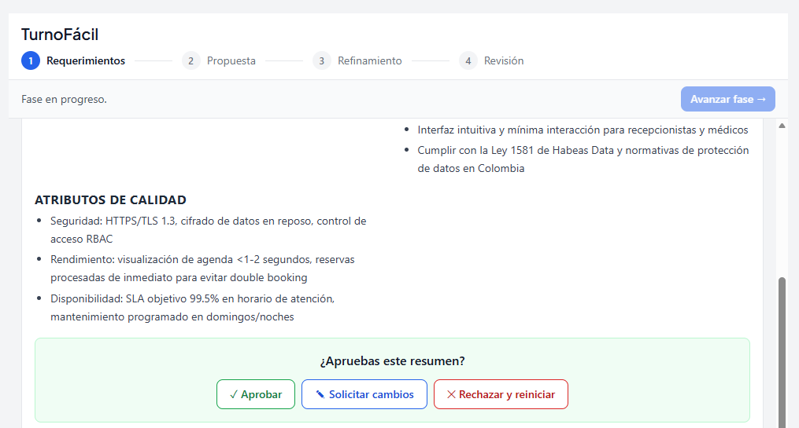
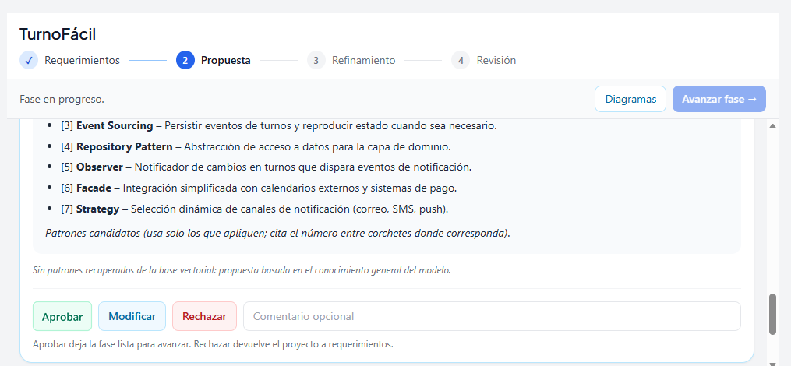
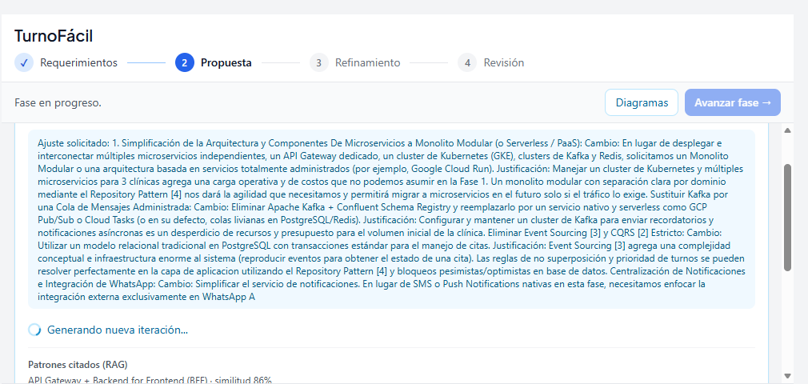
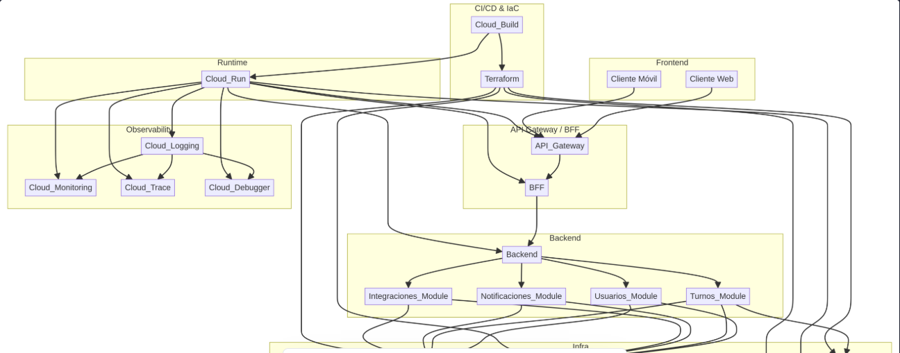
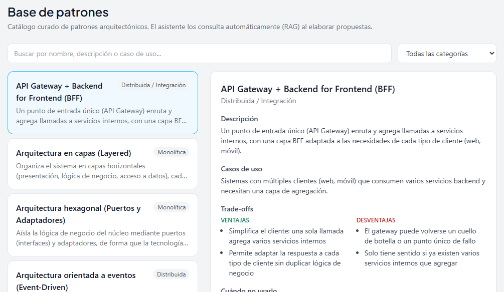

1Introducción
Definir la arquitectura de un sistema es una de las decisiones más costosas de corregir. En equipos pequeños y académicos suele tomarse sin requerimientos claros, sin comparar alternativas y sin dejar registro de por qué se eligió cada patrón.
ArchAgent es un asistente basado en IA generativa que acompaña al equipo desde la idea del producto hasta una propuesta con patrones reconocidos, diagramas, trade-offs y un ADR, dejando al usuario en control de cada decisión.
2Objetivo
Desarrollar un agente de IA que guíe la definición de arquitecturas de software, desde la elicitación de requerimientos hasta una propuesta justificada con patrones, diagramas y trade-offs.
Objetivos específicos
- Levantar requerimientos con preguntas progresivas y un resumen aprobable.
- Recomendar patrones con RAG sobre un catálogo curado.
- Generar diagramas Mermaid y tablas de trade-offs.
- Documentar la decisión final en un ADR revisable.
- Permitir que cada usuario conecte su propio LLM.
3¿Cómo funciona?
1
RequerimientosChat de elicitación guiada y resumen con atributos de calidad.
2
PropuestaArquitectura con patrones del catálogo citados (RAG).
3
RefinamientoDiagramas, ajustes puntuales e iteraciones con feedback.
4
RevisiónADR con contexto, decisión, alternativas y consecuencias.
En cada fase: AprobarModificarRechazar
4Arquitectura
Python 3.11FastAPILangChain
React 18TypeScriptPostgreSQL + PGVector
Mermaid.jsDockerGitHub Actions
Decisiones de arquitectura y calidad
- PostgreSQL + PGVector como única base: datos relacionales y búsqueda semántica juntos.
- SSE para mostrar la propuesta mientras se genera, con opción de cancelar.
- LLM configurable por usuario, con un wizard que filtra modelos por MMLU.
- CI en GitHub Actions: pytest, Vitest y evaluaciones en cada PR; despliegue a Railway.
- Rúbrica del ADR: respeta equipo y plazo, cifras con origen, coherencia y alternativas diversas.
5Principales resultados
Las capturas siguen el orden de uso de la aplicación con el caso de estudio TurnoFácil, un sistema de citas para clínicas pequeñas.
2,4 s
propuesta completa generada (meta: < 5 min)
19
patrones curados en la base de conocimiento
−63 %
latencia p50 del RAG con caché de embeddings
+1.500
pruebas automatizadas en CI (backend + frontend)
8
casos golden evalúan la propuesta y el ADR








6Features implementados
Agente y propuesta
F05Elicitación guiadaF07Base de patronesF08Propuesta y aprobaciónF09Diagramas MermaidF10Tabla de trade-offsF11Context7 MCPF12Memoria con EngramF13Puppeteer MCPF30Diseño del ADR
Plataforma
F01Stack Docker ComposeF03Caso de ejemplo (seed)F14Observabilidad (Langfuse)F17Manejo de erroresF18Pruebas y CI/CDF19Optimización del RAGF21Documentación de usuario
Historias de usuario
HU1Registro e inicio de sesiónHU2Recordar sesiónHU3Lista de proyectosHU4Perfil de usuarioHU5Preguntas progresivasHU6Visor de diagramasHU8Justificación con patronesHU9Propuesta en < 5 minHU10Aprobación por fasesHU11Ajuste quirúrgicoHU12Configuración del LLMHU13Documentos en el RAG
7Conclusiones
- ArchAgent cubre el ciclo completo: requerimientos, propuesta, refinamiento y ADR, con aprobación del usuario en cada fase.
- Apoyar la propuesta en un catálogo curado y una rúbrica evita respuestas genéricas o cifras inventadas.
- Generar en segundos permite iterar varias veces sobre la arquitectura.
- El LLM configurable hace la herramienta independiente del proveedor.
8Pasos futuros
- Piloto con equipos reales sobre el despliegue en la nube.
- Exportar el ADR y los diagramas al repositorio del proyecto.
- Generar artefactos: OpenAPI, esquema de BD e IaC.
- Mejorar la búsqueda de patrones y ampliar el catálogo.
- Medir de extremo a extremo en producción (< 3 min).
- Trabajo colaborativo: varios usuarios por proyecto.